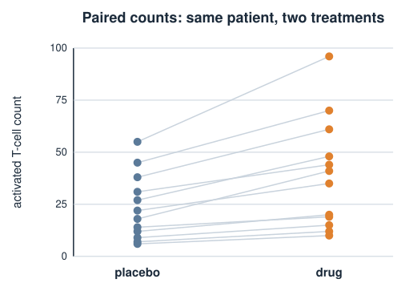
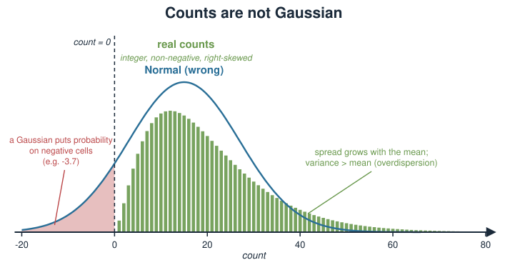
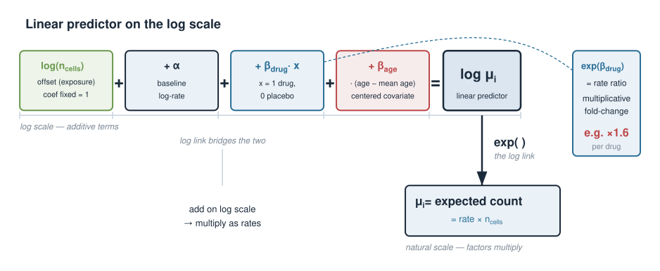
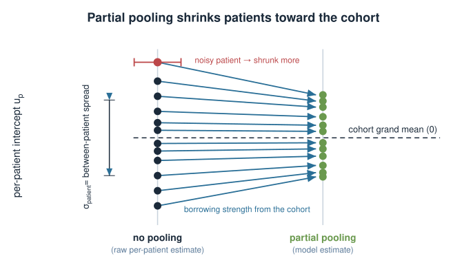
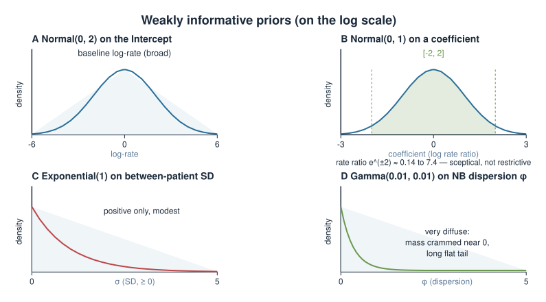
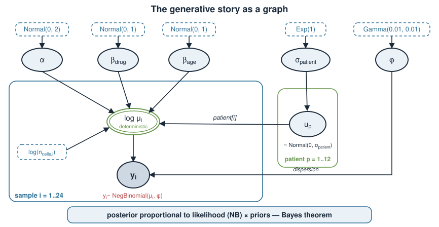
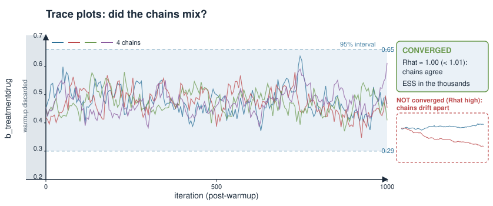
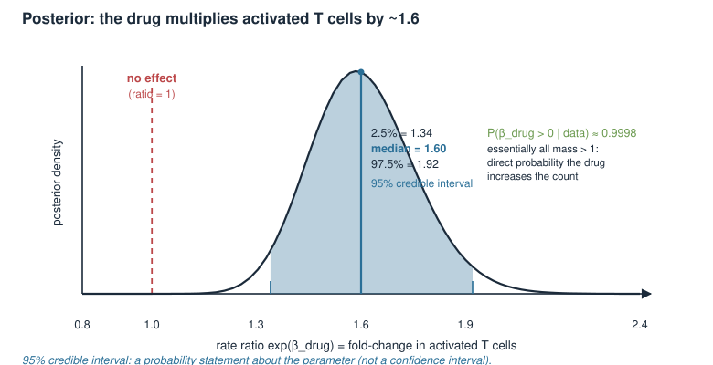
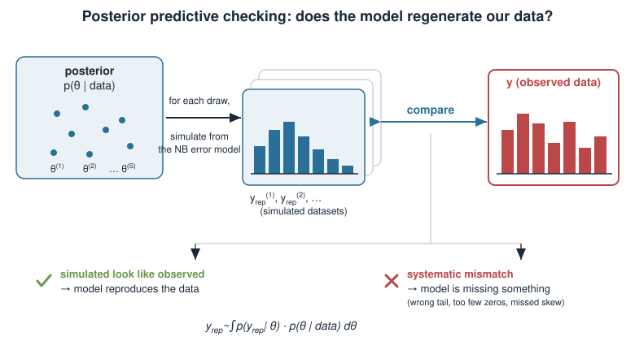
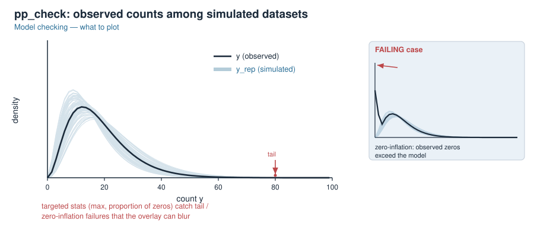

Every earlier unit in this block built one piece of a Bayesian model. Today we assemble all of them on a single, realistic biological dataset and take it end to end.
Turn a biological question into a generative model: error model + covariates + hierarchy + priors.
Recognise why count data across patients and treatments needs a negative-binomial error model, not a Gaussian.
Read a fitted posterior: point estimate, credible interval, and a direct probability statement about a treatment effect.
Check the model with posterior predictive checks — the Bayesian version of “does my model actually reproduce my data?”
See the whole workflow as STATIC R code (via brms, which compiles to Stan). Nothing is executed here — this is the map, not the drive.
Warning
Provisional block. The Bayesian statistics block may move to a later statistics / machine-learning course. Treat it as a coherent capstone of the ideas you have met, not as examined by-hand material in its current form.
The biological question
A small immunology trial. For each blood sample we count activated T cells (a discrete count) by flow cytometry or from single-cell data.
12 patients, each sampled under placebo and under drug (paired design).
Question: does the drug change the number of activated T cells, and by how much?
Nuisance structure we must respect: patients differ in baseline immune activity (age matters), samples differ in how many total cells were assayed (exposure), and repeated samples from one patient are not independent.
A naive t.test(count ~ treatment) ignores all three. We will build a model that handles them together.

What the data look like
One row per sample. Counts are small, integer, and right-skewed — the hallmark of biological count data.
head(dat)#> patient treatment age count n_cells log_exp#> 1 P01 placebo 34 18 50218 10.824#> 2 P01 drug 34 41 48903 10.797#> 3 P02 placebo 51 7 39044 10.572#> 4 P02 drug 51 12 52771 10.874#> 5 P03 placebo 29 55 61233 11.022#> 6 P03 drug 29 96 60918 11.017str(dat)#> 'data.frame': 24 obs. of 6 variables:#> $ patient : Factor w/ 12 levels "P01",...#> $ treatment: Factor w/ 2 levels "placebo","drug"#> $ age : num 34 51 29 ...#> $ count : int 18 41 7 12 55 96 ...#> $ n_cells : int 50218 48903 ...#> $ log_exp : num 10.82 10.80 ... # = log(n_cells), the exposure offset
Why not a Gaussian linear model?
A lm(count ~ treatment) assumes the response is continuous, symmetric, and constant-variance. Counts violate all three:
counts are non-negative integers — a Gaussian puts probability on \(-3.7\) cells;
their spread grows with the mean — big-count samples are noisier in absolute terms;
they are often overdispersed: variance \(>\) mean, more than Poisson allows.
We met these facts in the count-distributions unit (Poisson and the negative binomial). The fix is to choose an error model that generates counts, and let the mean depend on covariates through a log link.

Building block 1 — the error model
Model each count with a negative binomial, the overdispersed cousin of the Poisson:
The offset (coefficient fixed at 1) turns counts into rates per cell assayed — the standard fix for library size / sequencing depth.
\(x_i = 1\) for drug, \(0\) for placebo, so \(\beta_{\text{drug}}\) is the drug effect on the log scale.
\(e^{\beta_{\text{drug}}}\) is a rate ratio: a multiplicative fold-change in activated T cells. Centring age makes \(\alpha\) interpretable at the mean age.

Building block 3 — hierarchy
Two samples from the same patient share that patient’s biology. Give each patient a random intercept:
\(u_p\) shifts a patient up or down; \(\sigma_{\text{patient}}\) is the between-patient spread (the biological replicate variance).
The remaining scatter within a patient is technical / residual — captured by \(\phi\).
Hierarchy gives partial pooling: noisy patients are shrunk toward the group, borrowing strength across the cohort.
This is the hierarchical-models unit (biological vs technical replicates) applied to our cohort.

Building block 4 — priors
Bayesian fitting needs a prior on every parameter. We use weakly informative priors on the log scale:
priors <-c(prior(normal(0, 2), class ="Intercept"), # baseline log-rate, broadprior(normal(0, 1), class ="b"), # each effect: fold-changes mostly within ~e^2prior(exponential(1), class ="sd"), # between-patient SD, positive, modestprior(gamma(0.01, 0.01), class ="shape") # NB dispersion phi, very diffuse)
normal(0, 1) on a log-scale coefficient says: effects near zero are most plausible, but a rate ratio of \(e^{\pm 2}\approx 0.14\)–\(7.4\) is easily allowed. Sceptical, not restrictive.
Priors here play the role that regularisation will play in the penalized-models block: they tame the fit without dictating the answer.

The full model on one slide
The generative story, read top to bottom — how a count is born:
Bayes’ theorem ties it together: \(\;p(\text{parameters}\mid\text{data}) \propto \underbrace{p(\text{data}\mid\text{parameters})}_{\text{likelihood (NB)}}\;\underbrace{p(\text{parameters})}_{\text{priors}}.\)

Fitting it in R
One brms call expresses the entire model; it writes and compiles a Stan program under the hood (the R-STAN unit).
library(brms)fit <-brm( count ~ treatment + age_c +offset(log_exp) + (1| patient),data = dat,family =negbinomial(), # log link + dispersion phiprior = priors, # from the previous slidechains =4, iter =2000, warmup =1000,cores =4, seed =1)
treatment + age_c are the fixed effects; offset(log_exp) is the exposure term.
(1 | patient) is the per-patient random intercept — the hierarchy.
4 chains of MCMC explore the posterior; warmup samples are discarded.
Did the sampler work?
Before interpreting anything, check that the MCMC actually converged. Diagnostics come before conclusions.
Rhat\(\approx 1.00\) (want \(< 1.01\)): the chains agree — they mixed.
ESS in the thousands: enough effectively-independent draws to trust the summaries.
Also check 0 divergent transitions (a Stan-specific warning); divergences mean the geometry was too hard and the fit is untrustworthy.

Reading the posterior
The treatment coefficient lives on the log scale; exponentiate for the biological quantity — a rate ratio.
post <-as_draws_df(fit)# Rate ratio for the drug: multiplicative fold-change in activated T cellsexp(quantile(post$b_treatmentdrug, c(0.025, 0.5, 0.975)))#> 2.5% 50% 97.5%#> 1.34 1.60 1.92# Direct probability the drug increases the countmean(post$b_treatmentdrug >0)#> [1] 0.9998
Point estimate: the drug multiplies activated T cells by \(\approx 1.6\).
95% credible interval\([1.34,\ 1.92]\): a plausible range for the true effect — a statement about the parameter, unlike a confidence interval.
\(P(\beta_{\text{drug}} > 0 \mid \text{data}) \approx 0.9998\): an answer to the actual question, no null hypothesis needed.

Model checking — the idea
A converged sampler only means we fitted the model we wrote. Is that model any good? Posterior predictive checking asks: if the model is right, would it generate data that look like ours?
Draw parameters from the posterior, then simulate new datasets\(y^{\text{rep}}\) from the error model.
Compare those simulated datasets to the real data. Systematic mismatch = the model is missing something.
This is the Bayesian analogue of residual plots — but it checks the whole generative story, counts and all.

Model checking — what to plot
# Overlay: distribution of observed counts vs many simulated datasetspp_check(fit, ndraws =100)# Targeted checks on summary statistics the model must reproducepp_check(fit, type ="stat", stat ="mean")pp_check(fit, type ="stat", stat ="max") # is the tail right?pp_check(fit, type ="stat", stat =function(y) mean(y ==0)) # zero-inflation?
Density overlay: the observed count histogram should sit inside the cloud of simulated ones.
Test statistics: if the observed max or proportion of zeros falls in the tail of the simulated distribution, the error model is wrong — e.g. real data are more overdispersed or zero-inflated than a negative binomial allows.
A failed check sends you back to the model (a different error model, an extra covariate), not to the data.

Frequentist vs Bayesian, on this case
Same data, two philosophies — and this block chose the Bayesian one for concrete reasons.